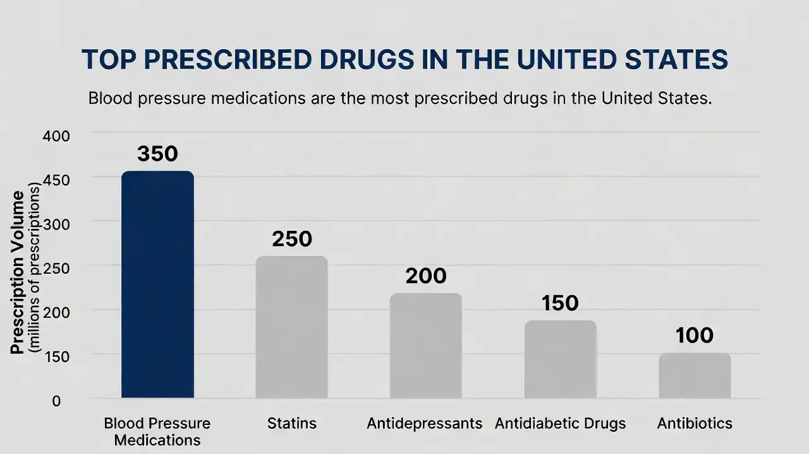
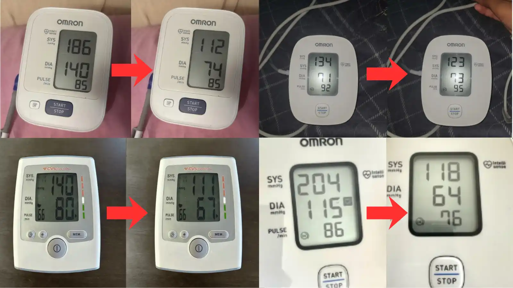

"My Doctor Said I Was a Ticking Time Bomb. This Artery Flush Cucumber Trick Brought Me Back."
How a 58-year-old retired firefighter from Texas with blocked arteries says he dropped his blood pressure from one eighty-seven over one ten to one eighteen over seventy-eight in just 15 days without adding a single pill to the seven he was already taking using a simple kitchen trick that he says helped clear plaque from his arteries and quit all his medications for good.
.webp)
Mike, 58, photographed 4 months apart. He says the turning point was a video about the "cucumber trick" he found while scrolling his phone at 1 a.m., after ending up in the emergency room.
Mike Dawson was 58 years old, a retired firefighter in San Antonio, Texas, when he blacked out in his kitchen on a Sunday morning.
His wife called 911. The paramedics took his blood pressure. It was two thirty over one twenty-two.
"They looked at each other and didn't say a word. That's when I knew it was serious," Mike told me over the phone.
"In the ER, a nurse finally said: 'Sir, you're lucky you didn't have a stroke right there in that kitchen.' That sentence changed my life."
Mike had been diagnosed with stage 2 hypertension six years earlier. His doctor put him on Losartan. Then Amlodipine. Then Lisinopril. Then a beta-blocker. At some point he was taking seven different medications, and his blood pressure still averaged around one sixty-five over one hundred.
"I was a firefighter for 30 years. I walked into burning buildings. But nothing scared me as much as hearing my doctor say: 'We're running out of options for you.'"
His father died of a massive stroke at 61. His older brother had a heart attack at 55. Mike was 58, on seven medications, and his blood pressure was still through the roof.
"I kept thinking, I'm next. I'm the next one in the family to go down. And there's nothing I can do."
But here's what stopped me cold:
Four months later, Mike says his blood pressure consistently sits at one eighteen over seventy-eight. He got off all his medications. His cardiologist checked the numbers three times because he couldn't explain the improvement.
And it all started with something he did with a cucumber.
He Trusted the Doctors. He Almost Died for It.
Mike did everything the doctors told him. For six years. Without questioning it.
Losartan first. Then they added Amlodipine when Losartan wasn't enough. Then Lisinopril. Then Metoprolol. Then Hydrochlorothiazide. Then Clonidine. Then Spironolactone.
Seven medications. Fourteen pills a day. And his blood pressure still sat at one sixty-five over one hundred on a good day.
"My bathroom cabinet looked like a pharmacy. I had one of those weekly pill organizers, the kind your grandma uses. At 56, I was filling little plastic boxes every Sunday night. That was my life."
But the medications weren't just failing to control his blood pressure. They were destroying his body.
"The fatigue was unreal. I'd sleep ten hours and wake up exhausted. My ankles would swell so bad I couldn't tie my shoes. I'd get dizzy every time I stood up. And the brain fog. I'd forget why I walked into a room. My wife thought I was getting dementia."
The worst part? The sexual side effects.
"I won't go into detail, but I'll say my marriage was suffering. My doctor's answer? Another pill. I said no. Enough."

Blood pressure medications are the most prescribed drugs in the United States, but studies suggest that nearly half of patients taking blood pressure medication still don't have their blood pressure under control. Side effects including fatigue, dizziness, chronic cough, erectile dysfunction, and electrolyte imbalances are reported by millions of people.
Then came the ER visit. Two thirty over one twenty-two. Four straight hours.
"The ER doctor looked at my medication list and said: 'You're already on everything we would prescribe.' He literally shrugged.
That's when I realized the medical system had given up on me. Just like it gave up on my father."
Mike's wife, Karen, was in the waiting room crying. She had already buried her father-in-law from a stroke. She was not ready to bury her husband.
"She held my hand on that hospital bed and said: 'We have to find another way. These pills are not saving you. They're just making me more comfortable while I wait.'"
What He Found at 1 A.M. Changed Everything
It was a Thursday night, three days after the ER visit. Mike couldn't sleep. His head was throbbing, that constant pressure behind his eyes that never really went away. He was scrolling YouTube when a video caught his attention.
It was a well-known cardiologist, someone who had spent decades treating hypertension patients at one of the most respected medical institutions in the United States. He had trained hundreds of doctors, received national cardiology awards, and was recognized as an authority in cardiovascular prevention.
But in the video, he wasn't talking about medication. He was talking about something he discovered after nearly losing someone in his own family to high blood pressure, something that, according to him, turned everything he knew completely upside down.
He showed something so simple that Mike almost laughed.
He cut a cucumber in half. Then rubbed the two halves together. A white, foamy substance appeared on the surface.
"I thought it was a joke. I almost closed the tab. But then he started explaining what that white foam actually was, and why scientists in Japan had discovered it contained a compound up to 10 times more powerful than Losartan for attacking the real cause of high blood pressure. A cause that, according to him, no conventional medication even tries to fix. I sat straight up. I had been taking Losartan for six years and it barely moved my numbers."
.webp)
The video that changed Mike's life. Over 1.2 million views and counting.
The video Mike watched that night went viral, over 1.2 million views. It's still available for free below.
▶ Watch the Viral Video, FreeNo signup · No credit card · While it's still available
The researcher, whose full identity and step-by-step cucumber trick are revealed inside the video, explained something that made Mike grab a pen and start taking notes:
The problem starts in an internal filtration system that 99% of doctors simply ignore. This system works like your body's water treatment plant. When it's working properly, it filters the blood, eliminates excess sodium, and produces a natural antidote that protects your arteries from the inside.
But over the years, inflammatory compounds from processed foods, free radicals, and the brutal excess of sodium, what he called the "Invisible Arterial Poison", damage this filtration center. And when it fails, the body STOPS producing the antidote. Without enough of that antidote, sodium corrodes the arterial walls from the inside, creating micro-fractures.
The body tries to seal those cracks by sending in a substance that hardens like cement, what he called "Arterial Cement." The arteries get clogged. They narrow. They stiffen. And blood pressure spikes. No amount of Losartan, Amlodipine, or beta-blockers can fix this system. They only force the vessels to open temporarily.
The moment you stop taking them, blood pressure shoots right back up, because the real cause is still broken. What is this system? It's revealed in detail inside the video, and it's the reason the cucumber trick works where medications have failed.
"That explained everything," Mike said. "Six years of pills and my pressure just kept going up. Because the pills were treating the number on the monitor, not the reason the number was high."
The Cucumber Trick. And Why It's Not What You Think
Let's be clear about one thing: this is not about eating salad or drinking cucumber water. That won't move your blood pressure even a little.
The real discovery lies in that white foam, the substance that appears when you cut a cucumber in half and rub the two exposed faces together.
That foam is rich in specific compounds, cucurbitacins and a unique concentration of bioavailable potassium, that scientists have been studying since a landmark study published by researchers in Japan.
Here's why this matters, and why the researcher says it may work where medications have failed:
First: The cucurbitacins in the cucumber foam act as natural protectors of the filtration cells that have been damaged by the Invisible Arterial Poison over the years. Unlike medications that force the vessels to open from the outside, these compounds may help restore the body's natural ability to filter properly and start producing the antidote again that protects your arteries from the inside. Think of it as repairing the water treatment plant instead of just cranking up the pump pressure.
Second: Each cucumber contains 312mg of bioavailable potassium, the same type of antidote your body should be producing naturally. It enters the bloodstream and, for every milligram of potassium that goes in, a milligram of corrosive sodium goes out. It's an automatic exchange. This external potassium substitutes exactly what your internal system stopped making, neutralizing the sodium, protecting the arteries, and helping dissolve the accumulated Arterial Cement.
Third: A specific preparation method, combining the
cucumber compound with two common kitchen ingredients, creates what
the researcher calls the "activation protocol."
This combination works as a catalyst that can multiply the potency of
the active compounds, helping them reach full strength exactly where
they need to go, attacking both the hidden root cause and the
Arterial Cement in the vessels.
The full preparation is shown step by step in the video.
A: Compromised filtration system → accumulated sodium → Arterial Cement blocking the artery, blood pressure stays high regardless of medication. B: After 15 days, filtration restored, natural antidote reactivated, Arterial Cement dissolving, arteries unblocked, blood flow returning to normal.
"Here is the crucial difference," the researcher explained in the video. "Blood pressure medications push down the symptom, the high reading. The cucumber trick targets the root cause, the filtration system that stopped working and the arteries clogged with Arterial Cement. That's why many people report that when they stop the protocol, their blood pressure stays low. The cause was corrected. The Cement was dissolved. The damage has already been repaired."
Mike's Results: The Numbers His Cardiologist Couldn't Explain
Mike started the cucumber trick on a Monday morning. He didn't tell anyone, not even Karen.
"I thought: I'll try it for a week, and if nothing happens, I'll throw the cucumbers in the trash and go back to my seven pills. I had nothing left to lose."
On Day 3, something shifted. The headaches, that constant pressure behind his eyes he had lived with for years, started to ease.
"It was like someone was slowly releasing a valve in my head. That tightness that was always there. I had forgotten what it felt like not to have it. On Day 3, it just… went away."
On Day 5, he took his blood pressure at home. It read one forty-eight over ninety-two. It hadn't been below one sixty in over a year.
"My hands were shaking while I held the monitor. I took it again. One forty-six over ninety. I took it a third time. One forty-nine over ninety-one. I sat on the edge of the bed and cried. My wife walked in and thought something was wrong. I showed her the screen and said: 'Something is working.'"
Day 10: one thirty-one over eighty-four.
Day 15: one eighteen over seventy-eight.
By week 6, under his cardiologist's supervision, Mike had weaned off all his medications. All seven.
"My cardiologist pulled up my chart on the screen. He scrolled through six years of readings, all high, all in red, and then got to the past three months. All green. All normal. He took off his glasses, looked at me, and said: 'Mike, I don't know what you're doing, but your arteries look like a 40-year-old man's.' I told him about the cucumber trick. He just shook his head and said: 'Keep doing it.'"
.webp)
"That's me last month at my grandson's baseball game. I ran the bases with him after the game. A year ago, I couldn't make it to the mailbox without getting dizzy." Mike, 4 months after starting the cucumber trick.
Want to see the exact cucumber trick Mike used? The full step-by-step video is still online, but it may not stay online for long.
▶ Watch the Free PresentationFree · No email required
Why Mike Threw Away His Pill Organizer
| Comparisoncategory | Blood Pressure Medicationsconventional approach | Cucumber Tricknatural alternative |
|---|---|---|
| Monthly cost | $50 – $300+ (with insurance) | Less than $1/day |
| How it works | Chemically forces the vessels to open | May help restore the root cause your medications never addressed |
| Side effects | Fatigue, dizziness, cough, erectile dysfunction, swelling | No significant side effects reported |
| When you stop | Pressure typically returns or spikes | Many report pressure stays stable |
| Root cause | Treats the symptom (high reading) | Targets the internal filtration system causing the high reading |
| Dependency | Daily pills for the rest of your life | Short-term trick |
| Access | Requires a prescription | Kitchen ingredients |
.webp)
.webp)
He's Not Alone
After Mike shared his story in a private Facebook group for hypertension patients, dozens of members reached out:
"I'd been on Lisinopril and Amlodipine for 9 years. My doctor kept raising the dosage and my pressure kept going up. Two and a half weeks after starting the cucumber trick, my wife checked my blood pressure and thought the monitor was broken. One twenty-two over seventy-nine. We checked three times. I showed my doctor and he reduced my medications on the spot."
"My biggest fear was having a stroke like my mother. She was 73 when it happened. I'm 71 and I lived in terror every single day. Three weeks into this cucumber trick and my blood pressure is better than it's been in the last 20 years. That constant fear? It finally went quiet."
"I'm 49. I was diagnosed last year and the first thing my doctor did was write me a prescription. No lifestyle advice, no real exam, just a pill. I found the video, tried the cucumber trick, and 12 days later I walked back into his office with one seventeen over seventy-five and a smile on my face. He asked what I'd changed. I said: 'A cucumber.'"

Results may vary. Individual results depend on starting blood pressure, consistency, and general health. Always consult your doctor before making any changes to your medication.
All these people watched the same free video. The cucumber trick and the full instructions are inside.
▶ Watch Now While It's Still AvailableNo credit card · No email
Why This Trick Is Going Viral. And Who Wants It Gone
The blood pressure medication market is worth over $28 billion globally. Companies like Pfizer, Novartis, and AstraZeneca generate billions in revenue from drugs that patients take every day, for life.
Every person who finds a natural way to maintain healthy blood pressure represents millions in lost long-term revenue for these companies.
Meanwhile, the medical system keeps following the same script: diagnose, prescribe, repeat. Most doctors spend less than 10 minutes per appointment. They don't investigate the root cause. They don't explore alternatives. They write prescriptions because that's what they were trained to do.
The Cucumber Trick Mike Used Is Still Available. For Now
The researcher behind this cucumber trick recorded a complete video presentation showing how to prepare the cucumber, the science behind it, and how to do it at home in under two minutes.
It includes why you need to rub the cucumber halves together (and what happens if you skip that step), the specific compound that activates when the foam appears, and the two additional kitchen ingredients that complete the cucumber trick.
Mike watched this video at 1 a.m. on a Thursday, three days after the ER told him there were "no more options." Four months later, his blood pressure is one eighteen over seventy-eight. He quit all seven medications. And his cardiologist says his arteries look 20 years younger.
"My father died at 61 from a stroke. My brother had a heart attack at 55. I was supposed to be next. Instead, I'm coaching my grandson's baseball team and I feel better than I did at 40. Karen says I'm a different person. She's right. I am."
Mike's exact protocol and the full scientific explanation are inside this free video.
▶ Watch the Free Video NowNo credit card · No signup · While it's still available
FAQ:
Is this the same "cucumber trick" I've seen online?
Not exactly. The researcher behind this cucumber trick
explained that simply eating cucumber or drinking cucumber water
will have no significant effect on blood pressure. The key is a
specific preparation method that activates compounds in the cucumber,
particularly the white foam that appears when the halves are
rubbed together. The full method, including two additional kitchen
ingredients, is explained in the video.
Do I need to stop taking my blood pressure medications?
Absolutely not. Do not stop or alter any medication without
your doctor's supervision. Many people have added the cucumber trick
alongside their current medications and worked with their doctors to
make adjustments from there. The video explains how to approach this
safely.
How soon can I see results?
Many people report
a noticeable reduction in headaches and that constant-pressure
feeling within the first 3 to 5 days. Measurable improvements in
blood pressure typically appear within the first two weeks, though
individual results vary.
I've had high blood pressure for years. Will this still
work?
The cucumber trick targets the hidden root cause of high
blood pressure, an internal system that deteriorates over time and
that conventional medications simply ignore. That means it's
relevant regardless of how long someone has had high blood pressure.
In fact, many of the people who reported the best results had been
dealing with hypertension for 5, 10, or even more than 20 years. The
video explains exactly what that cause is and why it works even in
chronic cases.
Who is the researcher in the video?
A
well-known cardiologist with decades of experience in cardiovascular
prevention, who worked at one of the most respected medical
institutions in the United States. After a devastating personal
experience with hypertension within his own family, he partnered
with a specialist in a medical field that few cardiologists consider
, and together they discovered the true root cause of high blood
pressure. His full identity, credentials, and the story behind the
discovery are revealed inside the presentation.